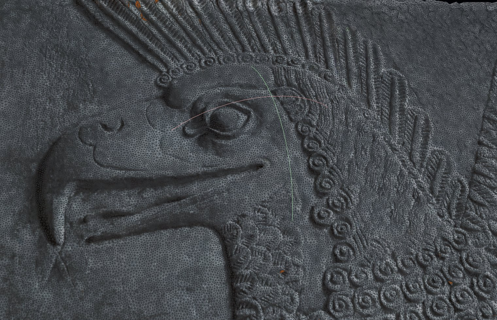

Introduction¶
{kind=link}
Ce document décrit de manière détaillée le “workflow” que nous souhaitons utiliser pour modéliser et reproduire des vestiges de la civilisation Assyrienne dans le but de générer des séquences visuelles pour le documentaire “MESOPOTAMIA : Les Dernières Pierres de Mésopotamie”
Le principe général consiste a collecter sur Internet des images de sculptures et de bas-relief puis a utiliser des techniques de photogrammétrie pour recréer un modèle numérique 3D.
La reconstruction photogrammétrique est basée sur l’enchaînement de 2 techniques:
Structure from motion (Sfm)¶
cette première phase permet de retrouver les paramètres intrinsèques (focale,distorsion) ainsi que les paramètres extrinsèques (position,orientation) des cameras ayant servi a prendre les photos originales.Il génère aussi un nuage de points 3D décrivant de manière sommaire l’objet observe (sparse point cloud).Il comporte en général plusieurs centaines voire plusieurs milliers de points.
Multi view Stereo (Mvs)¶
Lors de cette deuxième phase , les résultats obtenus précédemment sont exploités pour générer un nuage de points 3D beaucoup plus dense (dense point cloud).Il est constitue habituellement de plusieurs millions de points.Ces points sont obtenus en analysant les similitudes entre les différentes images.Ce nuage de points est alors utilise pour construire un maillage polygonal de l’objet observé.Au final ce maillage servira de support pour générer une texture 2D combinant les meilleures photographies initiales.
Le maillage final comporte en général des irrégularités ou des trous.En effet les images sources étant de nature très hétérogènes (conditions d’éclairage et colorimétrie différentes).Les objets observes n’apparaissant pas obligatoirement sous tout les angles possibles.La finalisation des objets se fera manuellement par un artiste 3D dans des logiciels tel que Zbrush (Pixologic) ou 3DCoat.
Les objets obtenus peuvent être extrêmement dense (plusieurs millions de polygones).Afin de pouvoir les manipuler plus aisément dans les logiciels 3D une dernière phase consiste a générer des modèles basse résolution (low-def) et d’y associer des textures représentant le déplacement par rapport a l’objet haute définition (displacement map).La combinaison de ces 2 éléments permet de retrouver la finesse des détails lors du rendu 3D.